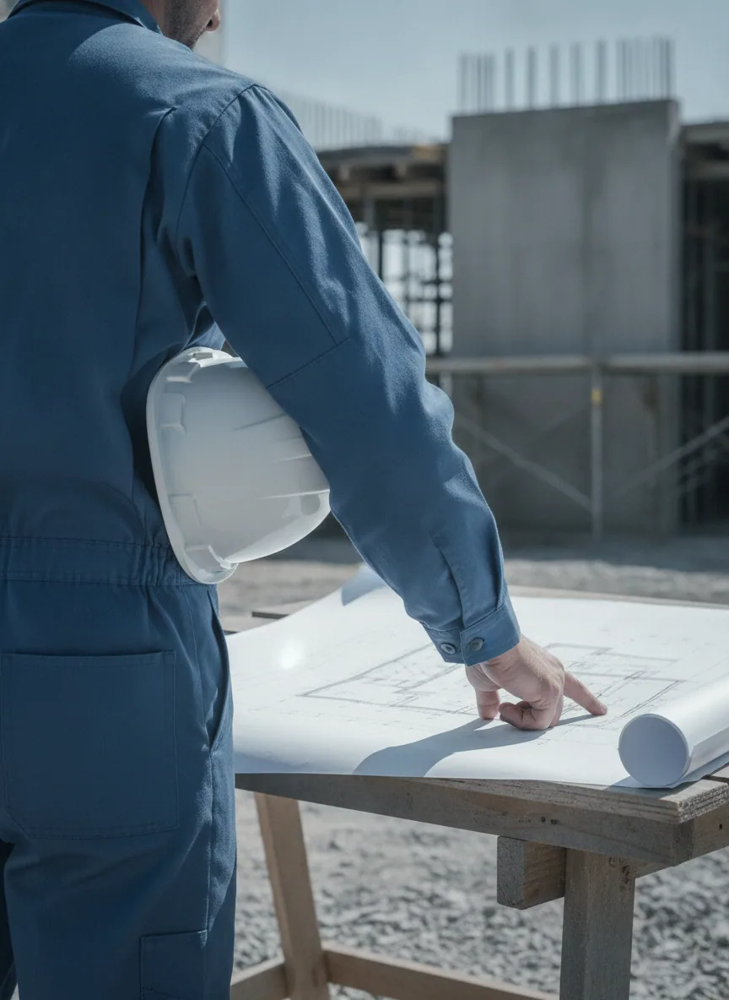

Company
会社案内
Greeting
ごあいさつ

SU-LINE合同会社
代表社員 能口 祐輔
この度は、SU-LINE合同会社のウェブサイトをご覧いただき、誠にありがとうございます。
水は、暮らしにも、社会にも欠かすことのできないインフラです。私たちは給排水・給湯設備の工事を中心に、 水まわりのリフォームや、突然の漏水トラブルへの対応まで、水道工事に関わる仕事を一つひとつ丁寧に行っています。
お客様の「困った」に、できるだけ早く、そして誠実にお応えすること。それが私たちの一番大切にしていることです。 小さなことでもお気軽にご相談いただける、地域に根ざした会社でありたいと考えています。
これからも、まっすぐな仕事で、暮らしを支えてまいります。どうぞよろしくお願いいたします。
Philosophy
会社理念
水道設備工事を通じて、暮らしを支え、地域とともに成長していく。
01
誠実な仕事
見えない配管の中まで、手を抜かずに。一つひとつの工事に責任を持って向き合います。
02
スピード対応
水まわりのトラブルは待ったなし。ご連絡から現地調査まで、できる限り早く駆けつけます。
03
地域とともに
横浜の地で、お客様や関わる皆様との信頼を積み重ね、長く必要とされる会社をめざします。
Outline
会社概要
| 会社名 | SU-LINE合同会社 |
|---|---|
| 代表者 | 代表社員 能口 祐輔 |
| 所在地 | 神奈川県横浜市瀬谷区中屋敷1-13-6 イーストA202 |
| 電話番号 | 080-4184-9987 |
| 事業内容 | 給排水設備工事、給湯設備工事、水まわりリフォーム・修繕、漏水調査・修理、各種メンテナンス（設備工事全般・水道） |
| 対応エリア | 横浜市を中心とした神奈川県内 ※詳細はお問い合わせください |